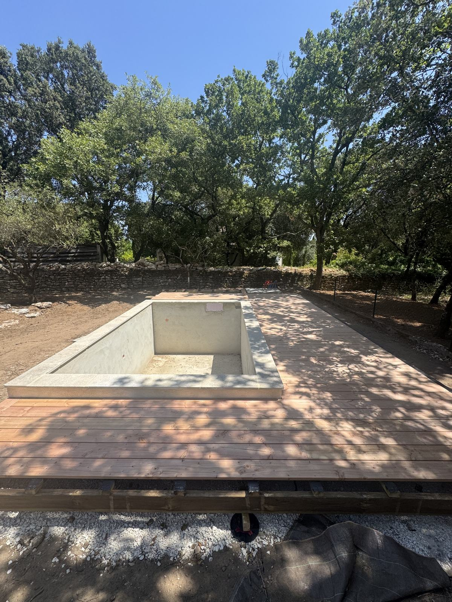
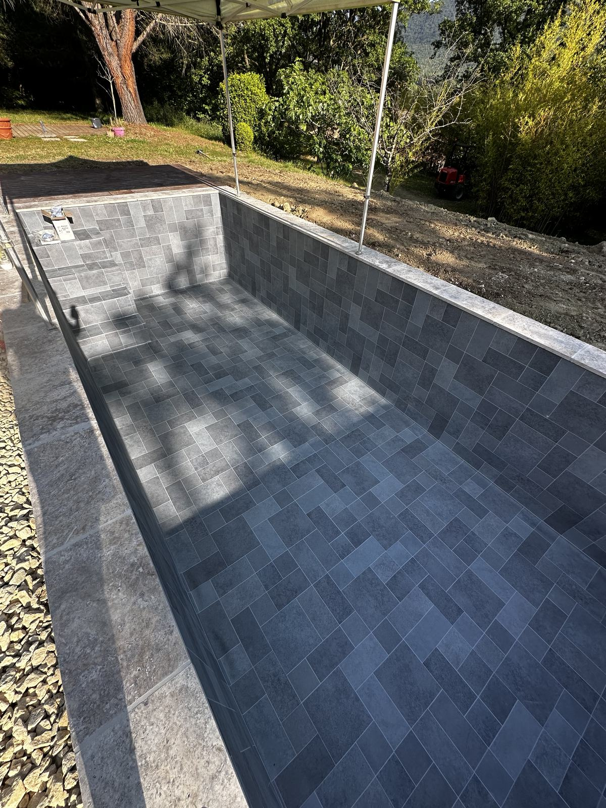
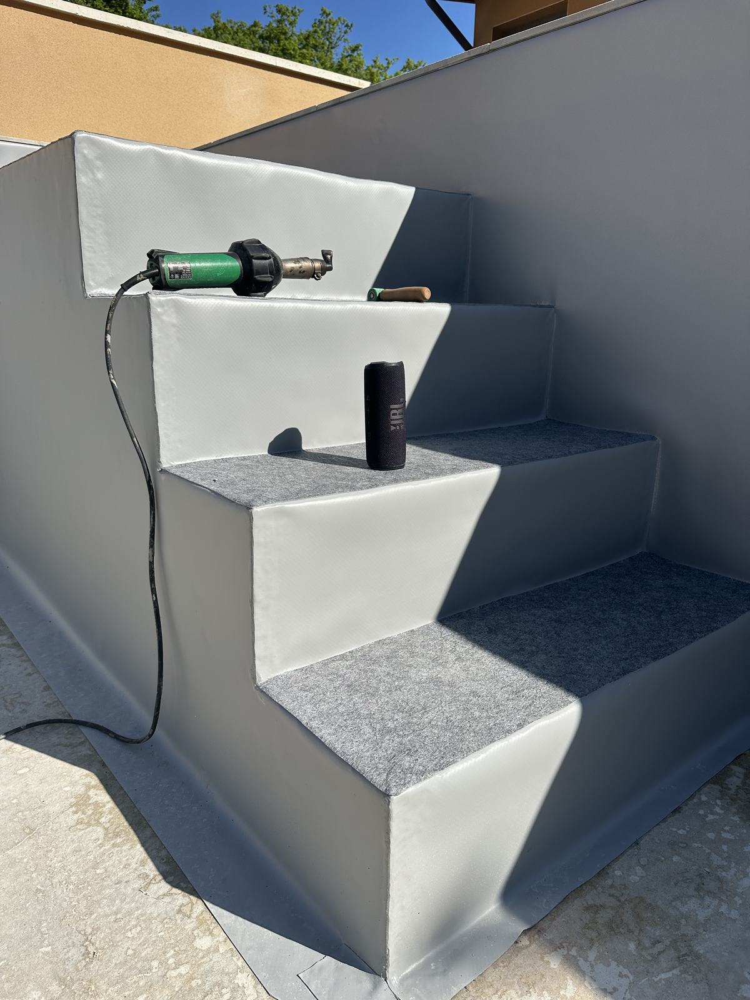
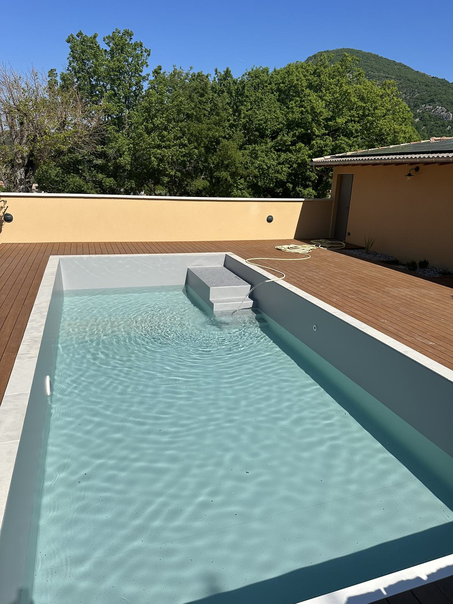
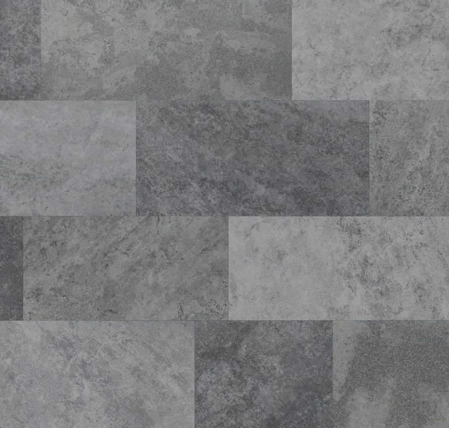
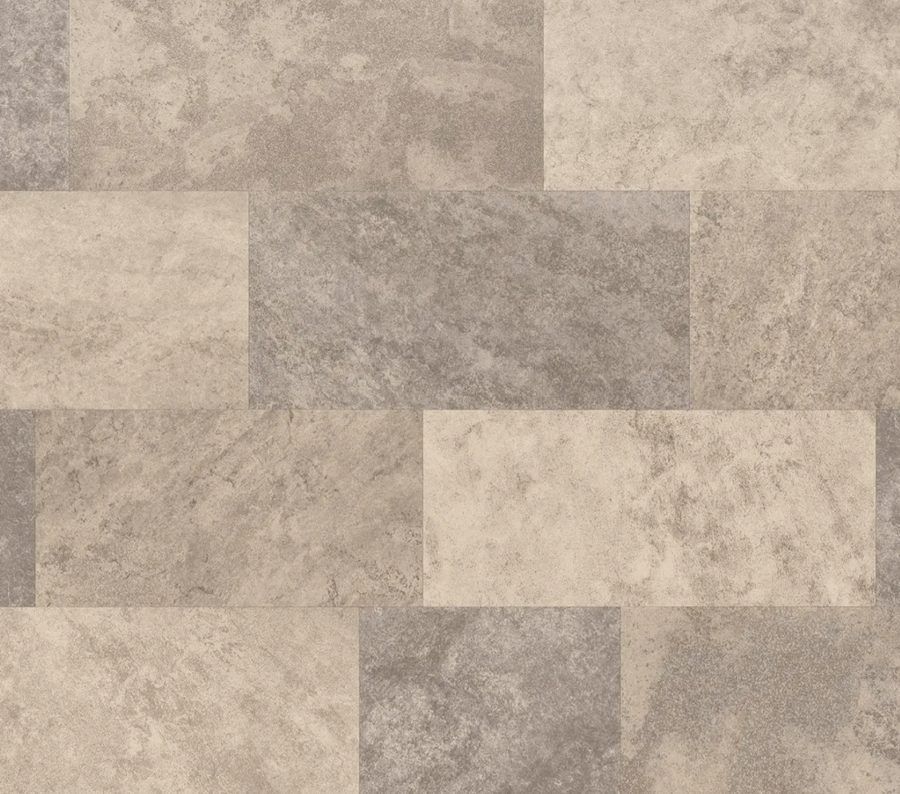
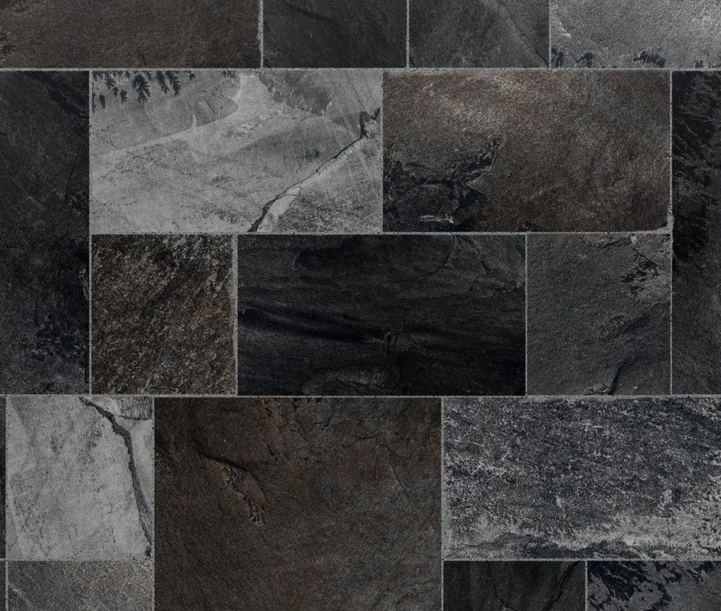
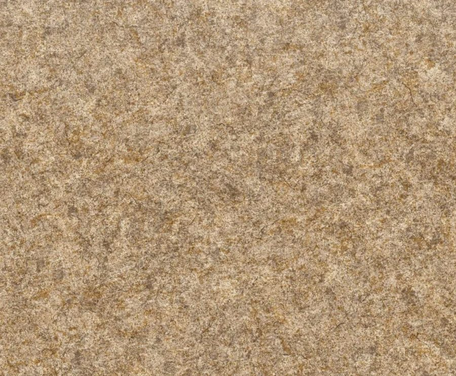
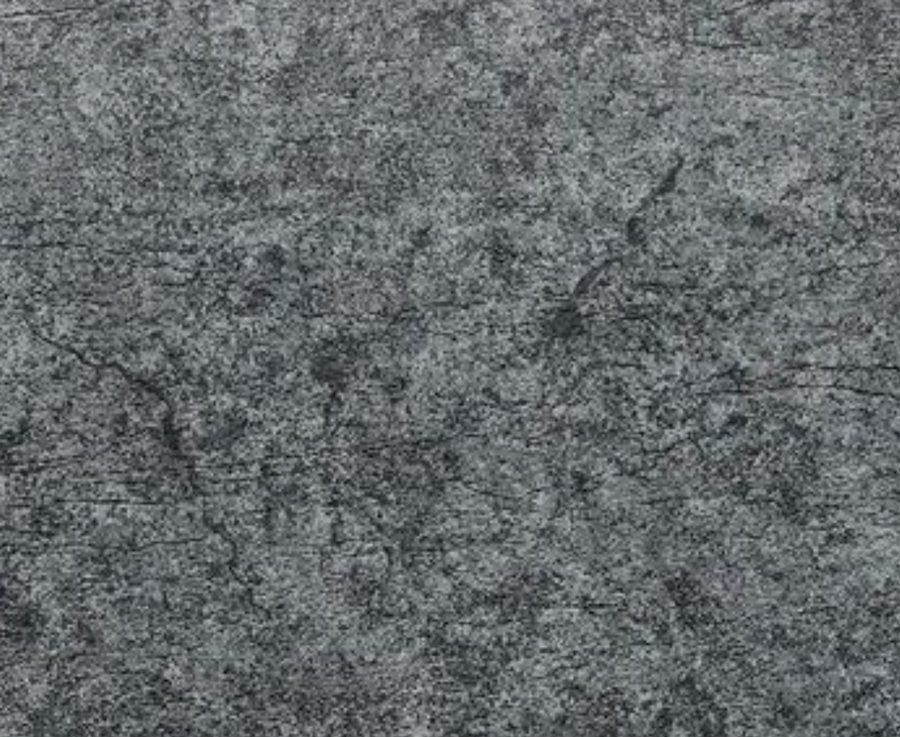
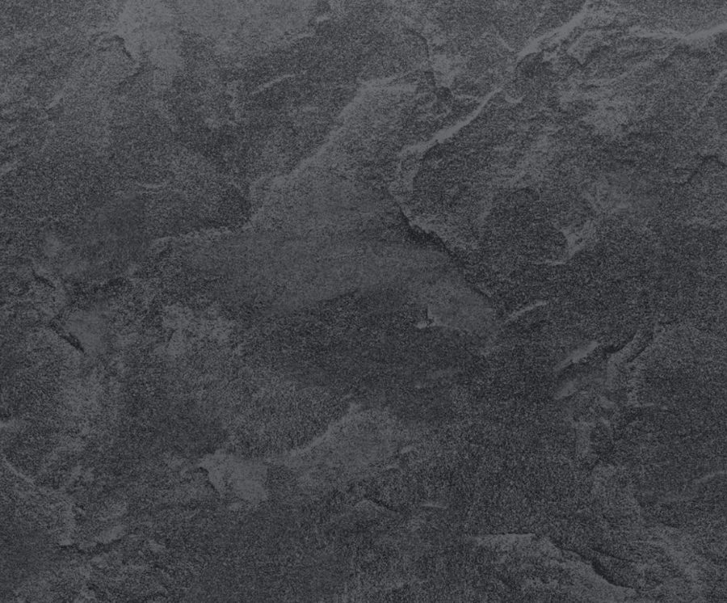

Notre méthode
De la visite sur site au premier bain
Chaque projet suit le même déroulé rigoureux : diagnostic, conception sur mesure, pose et thermosoudage, puis contrôle avant mise en eau.
Chiffres clés
Le matériau en quelques repères
Touchez un repère pour en savoir plus.
Caractéristiques techniques
150/100e (1,5 mm) — deux fois plus épais qu'un liner classique (75/100e). Deux couches de PVC souple prennent en sandwich une armature polyester tissée, pour une résistance mécanique bien supérieure aux chocs, à la pression de l'eau et aux mouvements du support.
15 à 25 ans de durée de vie estimée, contre 8 à 10 ans pour un liner classique. La membrane est traitée anti-UV, anti-algues et résiste aux produits chimiques de traitement de l'eau.
Chantier réalisé en moyenne en 2 jours pour une pose standard, hors délais de séchage et de mise en eau. Un délai précis vous est communiqué lors du diagnostic sur site.
Notre signature
La soudure thermique, lé après lé
Chaque lé de membrane est chauffé à l'air chaud puis fusionné au précédent, jusqu'à former une coque continue, sans agrafe ni point de faiblesse. C'est un geste technique, pas un produit standardisé.
-
Diagnostic · Saint-Restitut

Visite & relevé de cotes
Analyse complète du bassin, prise de mesures millimétrique, identification des contraintes (escaliers, plages, formes libres).
-
Calepinage · Dieulefit

Conception sur mesure
Choix de la membrane, plan de calepinage des lés optimisé pour limiter les soudures visibles et garantir la résistance.
-
Soudure · Grignan

Pose & thermosoudage
Découpe sur site, positionnement précis, soudure à air chaud de chaque lé — contrôle systématique de chaque joint.
-
Mise en eau · Pont-de-Barret

Contrôle & livraison
Vérification finale de l'étanchéité, mise en eau progressive, votre bassin est prêt à l'usage.
Le matériau
Pourquoi le PVC armé s'impose face au liner classique
Deux couches de PVC souple prennent en sandwich une armature en polyester tissé. Le résultat : un revêtement deux fois plus épais qu'un liner traditionnel, posé non pas agrafé mais soudé — chaque joint devient une pièce continue.
Liner classique
- Agrafé sous margelle, tension mécanique
- Épaisseur 75/100e en moyenne
- Durée de vie 8 à 10 ans
- Sensible au affaissement et au plissage
Membrane PVC armée
- Soudée à l'air chaud, liaison moléculaire
- Épaisseur 150/100e, armature polyester
- Durée de vie 15 à 25 ans
- Résistante aux UV, au gel et aux produits chimiques
Finitions
Une membrane pour chaque style de bassin



Effet Pierre de Bali
180/100e



Effet Pierre naturelle
180/100e
Unis
150/100e
Nuancier complet disponible sur demande de devis.
Votre projet
Prêt à démarrer votre projet ?
Devis gratuit sous 24h. Appelez-nous pour un tarif personnalisé, ou laissez-nous vos coordonnées.